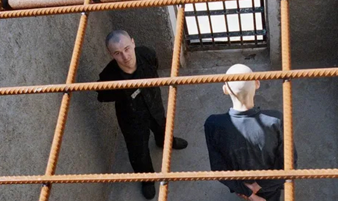
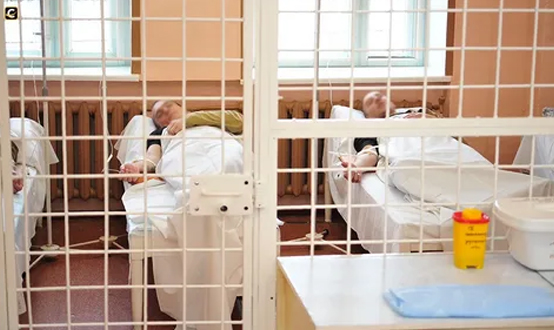

Конституция РФ (ч. 1 ст. 38) декларирует, что материнство и детство, семья находятся под защитой государства. Одним из способов обеспечения государственной защиты семьи и ребенка является установление уголовной ответственности за посягательства на семейные ценности и развитие несовершеннолетних.
Нормы, предусматривающие ответственность за эти преступные деяния, объединены в гл. 20 УК «Преступления против семьи и несовершеннолетних». По видовому объекту преступления данной категории можно разделить на две группы.
Преступления против семьи
1) Подмена ребенка — ст. 153 УК. Объект данного преступления — интересы ребенка, которого лишают права воспитываться в кругу своей семьи, и интересы родителей по воспитанию своего ребенка. Потерпевшим, как правило, является новорожденный ребенок, т. к. в более позднем возрасте деяние не имеет смысла ввиду возможности обнаружения подмены родителями. Объективная сторона — тайная замена одного ребенка другим. Местом подмены, как правило, является родильный дом, детское медицинское учреждение, а также общественные места, где ребенок может быть оставлен без присмотра. Преступление имеет материальный состав — считается оконченным с момента фактической подмены одного ребенка другим. Субъект — физическое вменяемое лицо, достигшее 16-летнего возраста. Субъективная сторона — вина в виде прямого умысла, мотивом должны являются корыстные или иные низменные побуждения (материальная выгода, зависть, месть и т.п.), иные мотивы не создают состава преступления.
2) Незаконное усыновление (удочерение) — ст. 154 УК. Объект данного преступления — совокупность общественных отношений, обеспечивающих нормальное функционирование семьи и развитие несовершеннолетнего. Потерпевшие — лица, не достигшие 18-летнего возраста. Объективная сторона — незаконные действия по усыновлению (удочерению) детей либо по передаче их под опеку (попечительство), а также на воспитание в приемные семьи. Обязательными условиями, делающими данные действия преступными, являются их неоднократность и корыстная мотивация (при ее наличии наказуемо и единичное незаконное усыновление). Субъективная сторона — вина в виде прямого умысла, а также корыстный мотив. Субъект специальный — работники органов опеки и попечительства.
3) Разглашение тайны усыновления (удочерения) — ст. 155 УК. Объект преступления — совокупность общественных отношений, обеспечивающих нормальное функционирование семьи. Объективная сторона — разглашение (предание огласке) тайны усыновления (удочерения) вопреки воли усыновителя. Сведения о факте усыновления могут быть известны судье, вынесшему решение об усыновлении ребенка, а также должностным лицам, осуществившим государственную регистрацию усыновления, а равно иным лицам, осведомленным о факте усыновления. Субъективная сторона — прямой умысел. Если субъектом преступления выступает частное лицо, оно несет ответственность за рассматриваемое деяние при условии совершения его из корыстных или иных низменных побуждений. Субъект — либо лицо, обязанное хранить факт усыновления (удочерения) как служебную или профессиональную тайну (судья, работники органов опеки и попечительства), либо частные лица, которым по каким-то причинам известен факт усыновления (удочерения)ребенка.
4) Злостное уклонение от уплаты средств на содержание нетрудоспособных родителей (ч. 2 ст. 157 УК).
Преступления против несовершеннолетних
1) Вовлечение несовершеннолетнего в совершение преступления — ст. 150 УК. Объект преступления — совокупность общественных отношений, направленных на обеспечение нормального психофизического и морально-нравственного развития и воспитания несовершеннолетнего, становление его личности. Потерпевший — лицо, не достигшее совершеннолетия, т.е. 18-летнего возраста, любого пола. Объективная сторона — вовлечение несовершеннолетнего в совершение преступления путем обещаний, обмана, угроз или иным способом (уговорами, уверением в безнаказанности в силу малолетства, разжиганием зависти, корысти и т.д.). Субъективная сторона характеризуется прямым умыслом, виновный должен осознавать несовершеннолетие лица, которого вовлекает в совершение преступления. Субъект — физическое вменяемое лицо, достигшее 18-летнего возраста. Отдельно указан специальный субъект — родитель, педагог или иное лицо, на которое законом возложена обязанность по воспитанию несовершеннолетнего, для указанных лиц наказание назначается более суровое ввиду того, что в глазах несовершеннолетнего они имеют больший авторитет. Также ужесточает наказание совершение указанного преступления с применением насилия или угроз его применения и вовлечение несовер-шеннолетнего в преступную группу либо в совершение тяжкого или особо тяжкого преступления.
2) Вовлечение несовершеннолетнего в совершение антиобщественных действий — ст. 151 УК. Объект преступления — совокупность общественных отношений, направленных на обеспечение нормального психофизического и морально-нравственного развития и воспитания несовершеннолетнего, становления его личности. Объективная сторона состоит в вовлечении несовершеннолетнего в совершение антиобщественных действий: систематическое (не менее трех раз в течение незначительного периода времени) употребление спиртных напитков, систематическое употребление одурманивающих веществ, занятие проституцией, бродяжничеством, попрошайничеством. Способы вовлечения в совершение перечисленных действий различны: уговоры, подкуп, обман, обещание, злоупотребление доверием, восхваление соответствующего образа жизни (например, бродяжничества), шантаж, угрозы различного содержания (за исключением угроз насилием). Субъективная сторона характеризуется виной в виде прямого умысла. Виновный должен осознавать факт несовершеннолетия потерпевшего. Субъект — физическое вменяемое лицо, достигшее 16-летнего возраста.
3) Розничная продажа несовершеннолетним алкогольной продукции — ст. 151.1. Данное деяние наказуемо, если оно совершено неоднократно, т. е. лицо уже было подвергнуто административному наказанию за аналогичное деяние, и период административной наказанности (1 год) не истек.
4) Вовлечение несовершеннолетнего в совершение действий, представляющих опасность для жизни несовершеннолетнего (ст. 151.2.). Вовлечение включает в себя склонение или иное вовлечение несовершеннолетнего в совершение противоправных действий, заведомо для виновного представляющих опасность для жизни несовершеннолетнего, путем уговоров, предложений, обещаний, обмана, угроз или иным способом. Субъектом может быть только совершеннолетнее лицо, при этом должны отсутствовать признаки склонения к совершению самоубийства, вовлечения несовершеннолетнего в совершение преступления или в совершение антиобщественных действий (эти деяния наказуемы в рамках отдельных статей). Квалифицирующими признаками деяния являются совершение преступления в составе группы лиц, в отношении двух и более несовершеннолетних, в публичном выступлении или в сети Интернет.
5) Неисполнение обязанностей по воспитанию несовершеннолетнего — ст. 156 УК. На родителей возложена обязанность заботиться о здоровье своего ребенка (или детей), о его развитии (физическом, психическом, нравственном) и о получении им основного общего образования. Родители, не исполняющие указанные требования, должны привлекаться к ответственности, в том числе при наличии определенных условий к уголовной. Объект преступления — совокупность общественных отношений, связанных с обеспечением нормального психофизического и морально-нравственного развития несовершеннолетних, становления их личности. В качестве дополнительного объекта выступают здоровье, личная свобода, честь и достоинство несовершеннолетнего. Объективная сторона может выступать в двух формах — неисполнение обязанностей по воспитанию несовершеннолетнего; и ненадлежащее исполнение указанных обязанностей. Уголовная ответственность за эти деяния наступает лишь при условии, если они соединены с жестоким обращением с несовершеннолетним — побоями, истязании, лишении пищи, крова и т. п. Незначительные ограничения, применяемые родителями к несовершеннолетним детям для достижения целей воспитательного воздействия, не образуют состава рассматриваемого преступления. Субъект преступления специальный — родители (усыновители), а также лица, на которых возложены обязанности по воспитанию несовершеннолетнего (например, опекуны, попечители, мачеха, отчим), а равно педагоги и другие работники образовательного, воспитательного, лечебного или иного учреждения, обязанного осуществлять надзор за несовершеннолетним. Субъективную сторону преступления образует вина в виде прямого умысла.
6) Злостное уклонение от уплаты средств по решению суда на содержание детей — ч. 1 ст.157 УК. Объект преступления — совокупность общественных отношений, направленных на обеспечение нормального психофизического развития ребенка. Потерпевшими от преступления выступают несовершеннолетние дети, а также нетрудоспособные дети, достигшие 18-летнего возраста. Объективную сторону образует злостное уклонение от уплаты по решению суда средств на содержание детей. Уклонение может выступать в форме прямого отказа от уплаты присужденных судом средств на содержание детей, а также в виде сокрытия лицом своего действительного заработка, смены работы или места жительства с целью избежать удержаний по исполнительному листу, уклонения с этой же целью от общественно полезного труда и т. д. О злостности уклонения от уплаты средств на содержание детей может свидетельствовать повторность совершения аналогичного преступления, уклонение, продолжаемое после соответствующего предупреждения, сделанного компетентными органами, длительность неуплаты средств и другие обстоятельства. С субъективной стороны преступление характеризуется виной в виде прямого умысла. Субъект специальный — родители (усыновители). Лица, лишенные родительских прав, не освобождаются от уплаты средств на содержание детей и также могут выступать в качестве субъектов данного преступления.